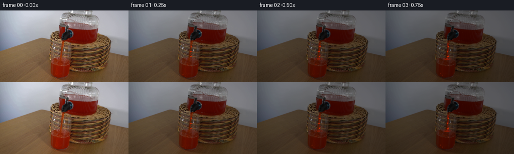
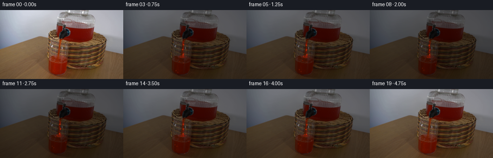
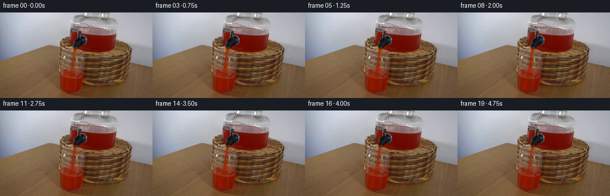
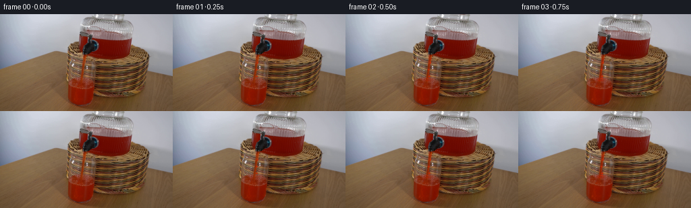

CODING AGENTS AS PIXEL WORLD MODELS
traex/DeepSeek-V4.1-Flash · 0066
点击播放 · 原生 RGB 像素
此结果可播放，但该运行尚未通过最终提交审核。页面展示不代表评测通过。
逐轮保存的候选
回放视频、检查图与代码变化。
每份候选均可单独播放。实际图片检查记录在下方工具轨迹中。
候选 01播放与检查图
点击播放 · 原生 RGB 像素


展开代码变化
--- 上一保存版本
+++ 本次保存版本
@@ -0,0 +1,268 @@
+from pathlib import Path
+
+import cv2
+import numpy as np
+from PIL import Image
+
+import artifact_io
+
+
+ROOT = Path(__file__).resolve().parent
+WIDTH, HEIGHT = 256, 144
+FRAME_COUNT = 20
+
+
+def smoothstep(edge0, edge1, value):
+ value = np.clip((value - edge0) / (edge1 - edge0), 0.0, 1.0)
+ return value * value * (3.0 - 2.0 * value)
+
+
+def pour_envelope(t):
+ rise = smoothstep(0.02, 0.15, t)
+ fall = 1.0 - smoothstep(0.80, 0.96, t)
+ return float(rise * fall)
+
+
+def draw_stream(frame, t, envelope):
+ """Strengthen and ripple the narrow stream already present in the source."""
+ if envelope <= 0.0:
+ return frame
+
+ out = frame.astype(np.float32)
+ yy, xx = np.mgrid[65:99, 115:134]
+ local_t = (yy - 65.0) / 34.0
+ center = (
+ 123.8
+ + 0.65 * np.sin(2.0 * np.pi * (1.18 * t - 0.08 * (yy - 65.0)))
+ + 0.55 * local_t
+ )
+ width = 1.70 + 0.32 * local_t + 0.14 * np.sin(
+ 2.0 * np.pi * (t * 1.7 + local_t)
+ )
+ across = (xx - center) / width
+ edge = np.exp(-np.power(np.abs(across), 3.4))
+ core = np.exp(-np.square(across / 0.48))
+ pulse = 0.55 + 0.45 * np.sin(2.0 * np.pi * (yy / 12.0 - t * 2.5))
+ alpha = envelope * edge * (0.18 + 0.30 * pulse)
+ highlight = envelope * core * (0.16 + 0.18 * pulse)
+
+ stream_rgb = np.empty((*yy.shape, 3), np.float32)
+ stream_rgb[:] = (139.0, 15.0, 3.0)
+ stream_rgb += highlight[..., None] * np.array((73.0, 26.0, 7.0), np.float32)
+ stream_rgb += (edge * envelope)[..., None] * np.array((8.0, -2.0, -1.0), np.float32)
+
+ patch = out[65:99, 115:134]
+ patch[:] = patch * (1.0 - alpha[..., None]) + stream_rgb * alpha[..., None]
+
+ for base_y, phase in ((72.0, 0.1), (82.0, 0.55), (92.0, 0.9)):
+ y = int(round(base_y + 2.0 * t))
+ x = 124.0 + 0.65 * np.sin(2.0 * np.pi * (t * 1.35 + phase))
+ value = envelope * (0.22 + 0.12 * np.sin(2.0 * np.pi * (t * 2.1 + phase)))
+ if value > 0.0:
+ cv2.circle(
+ out,
+ (int(round(x)), y),
+ 1,
+ (188.0, 43.0, 7.0),
+ -1,
+ cv2.LINE_AA,
+ )
+ patch = out[65:99, 115:134]
+ mask = np.exp(-np.square((xx - x) / 1.7) - np.square((yy - y) / 1.2))
+ patch[:] = patch * (1.0 - value * mask[..., None]) + np.array(
+ (205.0, 52.0, 10.0)
+ ) * (value * mask[..., None])
+
+ return np.clip(out, 0, 255).astype(np.uint8)
+
+
+def draw_impact(frame, t, envelope):
+ """Add a small crown and brief droplets where the stream meets the liquid."""
+ if envelope <= 0.0:
+ return frame
+
+ out = frame.astype(np.float32)
+ impact_x, impact_y = 122.0, 97.0
+
+ overlay = np.zeros_like(out)
+ for ring in range(3):
+ radius = 2.0 + ring * 2.0 + 0.4 * np.sin(
+ 2.0 * np.pi * (t * 1.4 + ring * 0.25)
+ )
+ cv2.ellipse(
+ overlay,
+ (int(round(impact_x)), int(round(impact_y))),
+ (max(1, int(round(radius * 1.55))), max(1, int(round(radius * 0.42)))),
+ 0.0,
+ 0.0,
+ 360.0,
+ (190.0, 34.0, 7.0),
+ 1,
+ cv2.LINE_AA,
+ )
+ alpha = envelope * (0.24 - ring * 0.045)
+ mask = np.clip(overlay.max(axis=2) / 190.0, 0.0, 1.0)[..., None]
+ out = out * (1.0 - alpha * mask) + overlay * (alpha * mask)
+
+ cycle = (t * 3.2) % 1.0
+ droplets = (
+ (-9.0, -3.2, 0.28, 0.00),
+ (8.4, -2.4, 0.24, 0.17),
+ (-5.2, -5.8, 0.31, 0.40),
+ (5.0, -6.4, 0.27, 0.61),
+ (-1.5, -7.3, 0.21, 0.83),
+ )
+ for vx, vy, life, phase in droplets:
+ age = (cycle + phase) % 1.0
+ if age > life:
+ continue
+ u = age / life
+ x = impact_x + vx * u
+ y = impact_y - 1.0 + vy * u + 7.0 * u * u
+ strength = envelope * np.sin(np.pi * u) * 0.55
+ if strength <= 0.01:
+ continue
+ overlay = np.zeros_like(out)
+ cv2.circle(
+ overlay,
+ (int(round(x)), int(round(y))),
+ 1 if strength > 0.28 else 0,
+ (209.0, 47.0, 8.0),
+ -1,
+ cv2.LINE_AA,
+ )
+ mask = np.clip(overlay.max(axis=2) / 209.0, 0.0, 1.0)[..., None]
+ out = out * (1.0 - strength * mask) + overlay * (strength * mask)
+
+ return np.clip(out, 0, 255).astype(np.uint8)
+
+
+def animate_glass_surface(frame, t, envelope, red_mask):
+ """Ripple the top few pixels of the red liquid in the receiving glass."""
+ x0, x1, y0, y1 = 96, 145, 91, 112
+ out = frame.astype(np.float32)
+ patch = out[y0:y1, x0:x1]
+ yy, xx = np.mgrid[y0:y1, x0:x1].astype(np.float32)
+ activity = 0.24 + 0.76 * envelope
+ wave = np.sin(2.0 * np.pi * ((xx - x0) / 18.0 - t * 1.9))
+ depth = np.exp(-np.square((yy - 97.0) / 4.2))
+ dy = activity * depth * wave * (0.62 + 0.18 * np.sin(2.0 * np.pi * t))
+ map_x = xx - x0
+ map_y = np.clip(yy + dy - y0, 0.0, y1 - y0 - 1.0)
+ warped = cv2.remap(
+ patch,
+ map_x.astype(np.float32),
+ map_y.astype(np.float32),
+ interpolation=cv2.INTER_LINEAR,
+ borderMode=cv2.BORDER_REFLECT_101,
+ )
+ region_mask = red_mask[y0:y1, x0:x1].astype(np.float32)
+ region_mask = cv2.GaussianBlur(region_mask, (0, 0), 0.7)
+ blend = np.clip(depth * activity * 0.72, 0.0, 0.72) * region_mask
+ patch[:] = patch * (1.0 - blend[..., None]) + warped * blend[..., None]
+
+ for x in range(101, 140):
+ surface_y = 96.4 + 0.55 * np.sin(
+ 2.0 * np.pi * ((x - 101) / 17.5 - t * 1.8)
+ )
+ y = int(round(surface_y))
+ if not red_mask[max(0, y), x]:
+ continue
+ glint = 0.16 + 0.13 * np.sin(
+ 2.0 * np.pi * (t * 1.5 + (x - 101) / 21.0)
+ )
+ out[y, x] = out[y, x] * (1.0 - glint) + np.array((180.0, 52.0, 15.0)) * glint
+ if y + 1 < HEIGHT:
+ out[y + 1, x] *= 0.94
+
+ return np.clip(out, 0, 255).astype(np.uint8)
+
+
+def animate_vessel_liquid(frame, t):
+ """Move soft highlights through the red liquid in the tilted dispenser."""
+ out = frame.astype(np.float32)
+ yy, xx = np.mgrid[35:87, 116:218].astype(np.float32)
+ patch = out[35:87, 116:218]
+ body_mask = (
+ (patch[:, :, 0] > 1.35 * patch[:, :, 1])
+ & (patch[:, :, 0] > 1.55 * patch[:, :, 2])
+ & (patch[:, :, 0] > 48.0)
+ ).astype(np.float32)
+ body_mask = cv2.GaussianBlur(body_mask, (0, 0), 1.0)
+ phase = 2.0 * np.pi * (
+ 0.95 * t - 0.038 * (xx - 116.0) + 0.018 * (yy - 35.0)
+ )
+ waves = 0.58 * np.sin(phase) + 0.25 * np.sin(
+ 2.0 * np.pi * (1.7 * t + (yy - 35.0) / 29.0)
+ )
+ alpha = body_mask * np.clip(0.035 + 0.038 * waves, 0.0, 0.073)
+ tint = np.empty((*yy.shape, 3), np.float32)
+ tint[:] = (142.0, 25.0, 8.0)
+ patch[:] = patch * (1.0 - alpha[..., None]) + tint * alpha[..., None]
+
+ band_x = 125.0 + 1.4 * np.sin(2.0 * np.pi * t)
+ band = np.exp(-np.square((xx - band_x) / 2.0)) * body_mask
+ band *= np.clip(
+ 0.055 + 0.04 * np.sin(2.0 * np.pi * (t + yy / 31.0)), 0.0, 0.095
+ )
+ patch[:] = patch * (1.0 - band[..., None]) + np.array((174.0, 61.0, 26.0)) * band[..., None]
+ return np.clip(out, 0, 255).astype(np.uint8)
+
+
+def add_bubbles(frame, t, envelope, red_mask):
+ """Add sparse rising bubbles inside the receiving liquid."""
+ out = frame.astype(np.float32)
+ bubbles = (
+ (108.0, 129.0, 0.22, 0.00),
+ (116.0, 121.0, 0.18, 0.31),
+ (126.0, 134.0, 0.15, 0.57),
+ (135.0, 117.0, 0.13, 0.79),
+ (112.0, 138.0, 0.12, 0.15),
+ )
+ for base_x, start_y, strength, phase in bubbles:
+ y = start_y - ((t * 18.0 + phase * 37.0) % 34.0)
+ x = base_x + 1.0 * np.sin(2.0 * np.pi * (t * 0.8 + phase))
+ yi, xi = int(round(y)), int(round(x))
+ if not (98 <= yi < 143 and 100 <= xi < 143 and red_mask[yi, xi]):
+ continue
+ alpha = strength * (0.45 + 0.55 * envelope)
+ overlay = np.zeros_like(out)
+ cv2.circle(overlay, (xi, yi), 1, (191.0, 51.0, 13.0), -1, cv2.LINE_AA)
+ out = out * (1.0 - alpha) + overlay * alpha
+ return np.clip(out, 0, 255).astype(np.uint8)
+
+
+def make_frames(source):
+ source = source.astype(np.uint8)
+ red_mask = (
+ (source[:, :, 0].astype(np.float32) > 1.35 * source[:, :, 1])
+ & (source[:, :, 0].astype(np.float32) > 1.55 * source[:, :, 2])
+ & (source[:, :, 0] > 46)
+ ).astype(np.uint8)
+
+ frames = [source.copy()]
+ for index in range(1, FRAME_COUNT):
+ t = index / (FRAME_COUNT - 1)
+ envelope = pour_envelope(t)
+ frame = source.copy()
+ frame = animate_vessel_liquid(frame, t)
+ frame = animate_glass_surface(frame, t, envelope, red_mask)
+ frame = add_bubbles(frame, t, envelope, red_mask)
+ frame = draw_stream(frame, t, envelope)
+ frame = draw_impact(frame, t, envelope)
+ frames.append(frame)
+
+ frames = np.stack(frames).astype(np.uint8)
+ assert frames.shape == (FRAME_COUNT, HEIGHT, WIDTH, 3)
+ assert np.array_equal(frames[0], source)
+ return frames
+
+
+def main():
+ source = np.asarray(Image.open(ROOT / "first_frame.png").convert("RGB"))
+ assert source.shape == (HEIGHT, WIDTH, 3)
+ artifact_io.save(make_frames(source), ROOT)
+
+
+if __name__ == "__main__":
+ main()
候选 02播放与检查图
点击播放 · 原生 RGB 像素

展开代码变化
--- 上一保存版本
+++ 本次保存版本
@@ -228,7 +228,11 @@
alpha = strength * (0.45 + 0.55 * envelope)
overlay = np.zeros_like(out)
cv2.circle(overlay, (xi, yi), 1, (191.0, 51.0, 13.0), -1, cv2.LINE_AA)
- out = out * (1.0 - alpha) + overlay * alpha
+ bubble_mask = overlay.max(axis=2) > 0.0
+ out[bubble_mask] = (
+ out[bubble_mask] * (1.0 - alpha)
+ + overlay[bubble_mask] * alpha
+ )
return np.clip(out, 0, 255).astype(np.uint8)
候选 03播放与检查图
候选 04播放与检查图
点击播放 · 原生 RGB 像素


展开代码变化
--- 上一保存版本
+++ 本次保存版本
@@ -31,10 +31,12 @@
out = frame.astype(np.float32)
yy, xx = np.mgrid[65:99, 115:134]
local_t = (yy - 65.0) / 34.0
+ # The source stream leans gently left as it falls; the small oscillation
+ # keeps the centerline attached to that existing path.
center = (
- 123.8
- + 0.65 * np.sin(2.0 * np.pi * (1.18 * t - 0.08 * (yy - 65.0)))
- + 0.55 * local_t
+ 125.2
+ - 0.105 * (yy - 65.0)
+ + 0.42 * np.sin(2.0 * np.pi * (1.18 * t - 0.08 * (yy - 65.0)))
)
width = 1.70 + 0.32 * local_t + 0.14 * np.sin(
2.0 * np.pi * (t * 1.7 + local_t)
可观测工具轨迹
实际执行的命令与返回图片。
命令 1exit 0
/bin/bash -c "pwd && rg --files -g '"'!*.pyc'"' -g '"'!__pycache__'"' | sed -n '1,200p'"
命令 2exit 0
/bin/bash -c "sed -n '1,240p' prompt.txt"
命令 3exit 0
/bin/bash -c "sed -n '1,260p' GENERATION_RULES.md"
命令 4exit 0
/bin/bash -c 'file first_frame.png && identify first_frame.png 2>/dev/null || true && git status --short'
命令 5exit 0
/bin/bash -c "sed -n '1,260p' artifact_io.py"
命令 6exit 0
/bin/bash -c "sed -n '1,300p' player_template.html"
命令 7exit 0
/bin/bash -c "python - <<'PY'
from PIL import Image
import numpy as np
im=Image.open('first_frame.png')
a=np.array(im)
print(im.mode, im.size, a.shape, a.dtype)
print('min/max/mean', a.min(axis=(0,1)), a.max(axis=(0,1)), a.mean(axis=(0,1)))
# 16x16 coarse RGB blocks
h,w=a.shape[:2]
for y in range(0,h,9):
vals=[]
for x in range(0,w,16):
b=a[y:min(y+9,h),x:min(x+16,w)].mean((0,1)).astype(int)
vals.append(f'{b[0]:02x}{b[1]:02x}{b[2]:02x}')
print(f'{y:03d}', ' '.join(vals))
PY"命令 8exit 0
/bin/bash -c "python - <<'PY'
from PIL import Image
import numpy as np
im=np.array(Image.open('first_frame.png')).astype(float)
# aspect-corrected ascii 128x72, chars by luminance
lum=im@np.array([.2126,.7152,.0722])
chars=' .:-=+*#%@'
H,W=lum.shape
for yy in range(72):
y0=int(yy*H/72); y1=max(y0+1,int((yy+1)*H/72))
line=''
for xx in range(128):
x0=int(xx*W/128); x1=max(x0+1,int((xx+1)*W/128))
v=lum[y0:y1,x0:x1].mean()
line+=chars[min(9,int(v/256*10))]
print(f'{y0:03d} '+line)
PY"命令 9exit 0
/bin/bash -c "python - <<'PY'
try:
import cv2; print('cv2',cv2.__version__)
except Exception as e: print('no cv2',e)
try:
import scipy; print('scipy',scipy.__version__)
except Exception as e: print('no scipy',e)
try:
import imageio; print('imageio',imageio.__version__)
except Exception as e: print('no imageio',e)
try:
import av; print('av',av.__version__)
except Exception as e: print('no av',e)
PY"命令 10exit 0
/bin/bash -c "python - <<'PY'
import cv2, numpy as np
im=cv2.imread('first_frame.png')
hsv=cv2.cvtColor(im,cv2.COLOR_BGR2HSV)
# red saturation dark/bright
for name,m in {
'red1':(((hsv[:,:,0]<12)|(hsv[:,:,0]>170))&(hsv[:,:,1]>100)&(hsv[:,:,2]>30)),
'red2':(((hsv[:,:,0]<15)|(hsv[:,:,0]>165))&(hsv[:,:,1]>80)&(hsv[:,:,2]>40)),
'bright':(hsv[:,:,2]>180),
'dark':(hsv[:,:,2]<50),
'blue':((hsv[:,:,0]>90)&(hsv[:,:,0]<130)&(hsv[:,:,1]>15)),
}.items():
n,lab,stats,cen=cv2.connectedComponentsWithStats(m.astype('uint8'),8)
comps=sorted([(int(s[4]),tuple(map(int,s[:4])),tuple(map(int,c))) for s,c in zip(stats[1:],cen[1:])],reverse=True)[:10]
print(name,'pixels',int(m.sum()),'comps',comps)
# row red ranges
m=(((hsv[:,:,0]<15)|(hsv[:,:,0]>165))&(hsv[:,:,1]>70)&(hsv[:,:,2]>35))
for y in range(0,144,3):
xs=np.where(m[y:y+3].any(0))[0]
if len(xs): print(y, int(xs.min()), int(xs.max()), len(xs))
PY"命令 11exit 0
/bin/bash -c "python - <<'PY'
from PIL import Image
im=Image.open('first_frame.png')
im.resize((1024,576), Image.Resampling.NEAREST).save('.tmp/first_x4.png')
# Crop central action, nearest + bicubic
im.crop((75,25,235,140)).resize((960,690),Image.Resampling.NEAREST).save('.tmp/action_x6.png')
print('wrote previews')
PY"命令 12exit 0
/bin/bash -c "python - <<'PY'
from PIL import Image
import numpy as np
im=np.array(Image.open('first_frame.png'))
# color sample grid of action area every 4px; output HSV-ish dominant list
for y in range(28,141,4):
row=[]
for x in range(80,225,5):
b=im[y:min(y+4,144),x:min(x+5,256)].reshape(-1,3)
# most saturated and median
mx=b.max(1); mn=b.min(1); s=(mx-mn)/(mx+1)
z=b[np.argmax(s)]
row.append('%02x%02x%02x'%tuple(z))
print(f'{y:03d}', ' '.join(row))
PY"命令 13exit 0
/bin/bash -c "python - <<'PY'
from PIL import Image
import numpy as np, colorsys
im=np.array(Image.open('first_frame.png'))
# crop x 75..235 y 20..144, downsample 2x2 via nearest or avg; classify by HSV
for yy in range(20,144,2):
s=''
for xx in range(75,236,2):
b=im[yy:yy+2,xx:xx+2].mean((0,1))/255
mx,mn=b.max(),b.min(); d=mx-mn
if mx<.12: c='K'
elif d<.055 and mx>.72: c='W'
elif d<.06 and mx>.45: c='.'
elif d<.07 and mx>.20: c=','
elif b[0]>.25 and b[0]>.9*b[1] and b[0]>1.5*b[2]: c='R' if b[0]>.5 else 'r'
elif b[1]>.35 and b[0]>.28 and b[0]>b[2]*1.15 and b[1]>b[2]*1.1: c='Y' if mx>.5 else 'y'
elif b[2]>.35 and b[2]>b[0]*1.04 and b[1]>.25: c='B'
elif mx>.55: c='w'
else: c='o'
s+=c
print(f'{yy:03d} '+s)
PY"命令 14exit 0
/bin/bash -c "python - <<'PY'
from PIL import Image
import numpy as np, cv2
im=np.array(Image.open('first_frame.png'))
hsv=cv2.cvtColor(im,cv2.COLOR_RGB2HSV)
# Action crop x=85..240 y=28..140: print every pixel as 2x2? detailed classification 2 px wide
# Class char: red if R>1.5G, red>1.5B; yellow/brown; dark; light; transparent glass edge blue-ish
for y in range(28,140,2):
s=''
for x in range(85,241,2):
b=im[y:y+2,x:x+2].reshape(-1,3).mean(0); r,g,bl=b
mx=b.max(); mn=b.min(); sat=(mx-mn)/(mx+1)
if r>1.55*g and r>1.55*bl and r>50: c='R' if r>110 else 'r'
elif r>1.25*g and r>1.4*bl and r>60: c='Y' if g>40 else 'y'
elif mx<25: c='K'
elif mx<65: c='D'
elif sat<.08 and mx>150: c='W'
elif sat<.12 and mx>90: c='w'
elif sat<.12: c='.'
elif bl>r*1.06 and bl>g*.95: c='B'
elif g>bl*1.25 and r>bl*1.15: c='o'
else: c='?'
s+=c
print(f'{y:03d} {s}')
PY"命令 15exit 0
/bin/bash -c "python - <<'PY'
import cv2,numpy as np
im=cv2.imread('first_frame.png')
# analyze edges in action crop
g=cv2.cvtColor(im,cv2.COLOR_BGR2GRAY)
e=cv2.Canny(g,25,70)
# horizontal/vertical line projections crop
for name,arr in [('x',e[:,80:240].sum(0)),('y',e[20:144,:].sum(1))]:
inds=np.argsort(arr)[-30:][::-1]
print(name,[(int(i+(80 if name=='x' else 20)),int(arr[i])) for i in inds])
# Save edge crop nearest
cv2.imwrite('.tmp/edges.png', cv2.resize(e[20:144,80:240],(960,744),interpolation=cv2.INTER_NEAREST))
PY"命令 16exit 0
/bin/bash -c "python - <<'PY'
from PIL import Image
import numpy as np
im=np.array(Image.open('first_frame.png'))
# Print row-wise runs of red saturated pixels in action region for selected rows
for y in range(24,144,2):
row=im[y,85:245].astype(int)
r,g,b=row.T
red=(r>1.45*g)&(r>1.55*b)&(r>45)
xs=np.where(red)[0]+85
if len(xs):
runs=[]; st=pr=xs[0]
for x in xs[1:]:
if x>pr+1: runs.append((int(st),int(pr))); st=x
pr=x
runs.append((int(st),int(pr)))
print(f'{y:03d}',runs)
PY"命令 17exit 0
/bin/bash -c "python - <<'PY'
from PIL import Image
import numpy as np, cv2
im=np.array(Image.open('first_frame.png'))
# Calculate gradients / texture stats for candidate glass zones x 170..240 y 80..140 and basket zones
for box in [(120,90,195,140),(160,80,220,140),(190,85,240,140),(30,70,80,140),(0,80,60,140)]:
x0,y0,x1,y1=box; c=im[y0:y1,x0:x1]
g=cv2.cvtColor(c,cv2.COLOR_RGB2GRAY)
print(box,'mean',c.mean((0,1)).round(1),'std',c.std((0,1)).round(1),'grad',np.abs(np.diff(g.astype(float),axis=1)).mean().round(2),'sat',cv2.cvtColor(c,cv2.COLOR_RGB2HSV)[:,:,1].mean().round(1))
# Local edge orientation? line detect
c=im[60:144,100:240]
g=cv2.cvtColor(c,cv2.COLOR_RGB2GRAY)
ed=cv2.Canny(g,25,70)
lines=cv2.HoughLinesP(ed,1,np.pi/180,threshold=12,minLineLength=12,maxLineGap=3)
print('lines')
if lines is not None:
for l in sorted(lines[:,0].tolist(),key=lambda p:-((p[2]-p[0])**2+(p[3]-p[1])**2))[:30]: print([l[0]+100,l[1]+60,l[2]+100,l[3]+60])
PY"命令 18exit 0
/bin/bash -c "python - <<'PY'
from PIL import Image
import numpy as np
im=np.array(Image.open('first_frame.png'))
# describe rows by intervals where image differs from smooth background estimate (basket/table)
# print 1px image crop around action as compact hex for edges maybe not needed
# vertical color sequence at x values every 10
for x in range(80,241,10):
vals=[]; prev=None; start=20
for y in range(20,144):
v=im[y,x].astype(int)
if prev is None or np.abs(v-prev).max()>35:
if prev is not None and y-start>=3: vals.append((start,y-1,tuple(im[(start+y-1)//2,x])))
start=y
prev=v
if 144-start>=3: vals.append((start,143,tuple(im[(start+143)//2,x])))
print('x',x,vals)
PY"命令 19exit 0
/bin/bash -c "python - <<'PY'
import cv2, numpy as np
im=cv2.imread('first_frame.png')
gray=cv2.cvtColor(im,cv2.COLOR_BGR2GRAY)
# Hough circles for glass
for p2 in [16,20,24,28,32,36]:
cs=cv2.HoughCircles(cv2.GaussianBlur(gray,(5,5),0),cv2.HOUGH_GRADIENT,dp=1,minDist=15,param1=50,param2=p2,minRadius=8,maxRadius=60)
print('p2',p2, None if cs is None else np.round(cs[0],1).tolist())
# line segments
ls=cv2.createLineSegmentDetector(cv2.LSD_REFINE_STD).detect(gray)[0]
if ls is not None:
seg=[]
for l in ls[:,0]:
x1,y1,x2,y2=l; d=((x2-x1)**2+(y2-y1)**2)**.5
if d>10: seg.append((round(float(d),1),round(float(x1),1),round(float(y1),1),round(float(x2),1),round(float(y2),1)))
print('segments',sorted(seg,reverse=True)[:50])
PY"命令 20exit 0
/bin/bash -c "python - <<'PY'
from PIL import Image
import numpy as np
from sklearn.cluster import KMeans
im=np.array(Image.open('first_frame.png'))
crop=im[20:144,90:230]
X=crop.reshape(-1,3).astype(float)
km=KMeans(n_clusters=14,random_state=0,n_init=5).fit(X)
# order by brightness
cent=km.cluster_centers_; order=np.argsort(cent.mean(1)); remap=np.empty(14,int); remap[order]=np.arange(14)
lab=remap[km.labels_].reshape(crop.shape[:2])
chars=' .:-=+*#%@"'$&WM'"'
print('centroids')
for i in range(14): print(chars[i],tuple(np.round(cent[order[i]]).astype(int)),int((lab==i).sum()))
for yy in range(0,124,2):
line=''
for xx in range(0,140,2):
block=lab[yy:yy+2,xx:xx+2].ravel(); vals,cnt=np.unique(block,return_counts=True)
line+=chars[vals[np.argmax(cnt)]]
print(f'{yy+20:03d} {line}')
PY"命令 21exit 0
/bin/bash -c "python - <<'PY'
import cv2, numpy as np
im=cv2.imread('first_frame.png'); gray=cv2.cvtColor(im,cv2.COLOR_BGR2GRAY)
# multi threshold, morphology closing to find object regions
for th in [15,20,25,30,35,40]:
ed=cv2.Canny(gray,th,th*2.5)
# connected contours
cnts,_=cv2.findContours(ed,cv2.RETR_LIST,cv2.CHAIN_APPROX_SIMPLE)
out=[]
for c in cnts:
x,y,w,h=cv2.boundingRect(c); area=cv2.contourArea(c); per=cv2.arcLength(c,False)
if area>50 or (w>20 and h>20): out.append((round(area,1),w,h,x,y,round(per,1)))
print('th',th, sorted(out,reverse=True)[:15])
PY"命令 22exit 0
/bin/bash -c "python - <<'PY'
from PIL import Image
import numpy as np, cv2
im=np.array(Image.open('first_frame.png')); g=cv2.cvtColor(im,cv2.COLOR_RGB2GRAY)
# edge binary map 2x2 blocks; characters show edge density and direction
gx=cv2.Sobel(g,cv2.CV_32F,1,0,ksize=3); gy=cv2.Sobel(g,cv2.CV_32F,0,1,ksize=3)
mag=np.hypot(gx,gy)
for yy in range(20,144,2):
s=''
for xx in range(75,241,2):
m=mag[yy:yy+2,xx:xx+2].mean()
if m<25:c=' '
elif m<50:c='.'
elif m<80:c=':'
elif m<120:c='+'
elif m<180:c='*'
else:c='#'
s+=c
print(f'{yy:03d} {s}')
PY"命令 23exit 0
/bin/bash -c "python - <<'PY'
import cv2, numpy as np
im=cv2.imread('first_frame.png')
g=cv2.cvtColor(im,cv2.COLOR_BGR2GRAY)
# bilateral then canny
for lo,hi in [(8,20),(12,30),(20,50),(30,70)]:
e=cv2.Canny(cv2.GaussianBlur(g,(3,3),0),lo,hi)
# downsample blocks 4x2, print char density
print('\\nTH',lo,hi)
for y in range(0,144,2):
s=''
for x in range(0,256,2):
v=e[y:y+2,x:x+2].sum()/4
s += ' ' if v==0 else ('.' if v<.25 else (':' if v<.5 else ('+' if v<.75 else '#')))
print(f'{y:03d} {s}')
PY"命令 24exit 0
/bin/bash -c "python - <<'PY'
from PIL import Image
import numpy as np, cv2
im=np.array(Image.open('first_frame.png')); g=cv2.cvtColor(im,cv2.COLOR_RGB2GRAY)
# Find straight long sloped edge boundaries using probabilistic Hough in action area
e=cv2.Canny(g,18,45)
lines=cv2.HoughLinesP(e,1,np.pi/720,threshold=14,minLineLength=18,maxLineGap=4)
arr=[]
for l in lines[:,0]:
x1,y1,x2,y2=map(int,l); dx=x2-x1; dy=y2-y1; length=(dx*dx+dy*dy)**.5
ang=np.degrees(np.arctan2(dy,dx))
if 75<max(x1,x2)<240 and 25<max(y1,y2)<144:
arr.append((round(length,1),round(ang,1),(x1,y1,x2,y2)))
for z in sorted(arr,reverse=True)[:80]: print(z)
PY"命令 25exit 0
/bin/bash -c "python - <<'PY'
from PIL import Image
import numpy as np, cv2
im=np.array(Image.open('first_frame.png'))
# classify pixels by whether likely liquid red, white highlight, dark outline, basket/glass neutral
r,g,b=[im[:,:,i].astype(float) for i in range(3)]
liq=(r>80)&(r>1.6*g)&(r>1.9*b)
# display liquid boundary by row at selected ranges
print('liquid x ranges')
for y in range(28,144,4):
xs=np.where(liq[y])[0]; xs=xs[(xs>=90)&(xs<240)]
if len(xs):
# split runs >2
runs=[]; st=pr=xs[0]
for x in xs[1:]:
if x>pr+2:runs.append((st,pr));st=x
pr=x
runs.append((st,pr))
print(y,runs)
# white/glass candidate edges based blue/gray at left/right
print('gray x boundaries')
for y in range(20,144,4):
row=im[y]; mx=row.max(1); mn=row.min(1); sat=(mx-mn)/(mx+1)
neutral=(sat<.09)&(mx>100)
xs=np.where(neutral)[0]; xs=xs[(xs>=90)&(xs<240)]
if len(xs):
runs=[]; st=pr=xs[0]
for x in xs[1:]:
if x>pr+1:runs.append((st,pr));st=x
pr=x
runs.append((st,pr))
print(y,[z for z in runs if z[1]-z[0]>=2])
PY"命令 26exit 0
/bin/bash -c "python - <<'PY'
from PIL import Image
import numpy as np
im=np.array(Image.open('first_frame.png'))
# Print RGB exact rows selected x every 2, in a symbolic category around action
for y in [30,35,40,45,50,55,60,65,70,75,80,85,90,95,100,105,110,115,120,125,130,135,140]:
print('\\ny',y)
for x in range(90,231,4):
r,g,b=map(int,im[y,x])
print(f'{x}:{r:02x}{g:02x}{b:02x}',end=' ')
print()
PY"命令 27exit 0
/bin/bash -c "python - <<'PY'
from PIL import Image
import numpy as np, cv2
im=np.array(Image.open('first_frame.png'))
# print RGB of specific points around expected glass
pts=[(x,y) for y in [70,80,90,100,110,120,130] for x in [150,160,170,180,190,200,210,220]]
for y in [70,80,90,100,110,120,130]:
print('y',y)
for x in range(150,231,5):
print(x,tuple(im[y,x]),end='; ')
print()
# create Sobel orientation map around glass for y70-140 x140-235 as colored segmentation maybe output coordinates of edges with angles >30
PY"命令 28exit 0
/bin/bash -c "python - <<'PY'
from PIL import Image
import numpy as np
im=np.array(Image.open('first_frame.png')).astype(float)
# symbolic map x=95..235, y=20..144, 2x2 means, chars categorize
for y in range(20,144,2):
s=''
for x in range(95,235,2):
r,g,b=im[y:y+2,x:x+2].mean((0,1))
mx=max(r,g,b); mn=min(r,g,b); sat=(mx-mn)/(mx+1)
if r>1.8*g and r>2*b and r>100: c='R'
elif r>1.5*g and r>1.7*b and r>55: c='r'
elif mx<30: c='K'
elif mx<60: c='d'
elif sat<0.07 and mx>165: c='W'
elif sat<0.09 and mx>105: c='w'
elif sat<0.12 and mx>65: c='.'
elif b>r*1.05 and b>g*.95: c='B'
elif b>g*1.03 and b>r*1.02: c='b'
elif mx>135 and g>r*.8: c='Y'
elif mx>95 and r>g*1.3: c='o'
elif mx>65 and r>g*1.15: c='O'
else: c='?'
s+=c
print(f'{y:03d} {s}')
PY"命令 29exit 0
/bin/bash -c "python - <<'PY'
import cv2,numpy as np
im=cv2.imread('first_frame.png'); g=cv2.cvtColor(im,cv2.COLOR_BGR2GRAY).astype(float)
# vertical edge strength sum across rows 55..140
for yr in [(45,75),(60,100),(80,143),(100,143)]:
y0,y1=yr; s=np.abs(np.diff(g[y0:y1,:],axis=1)).mean(0)
print('yr',yr, sorted([(int(i),round(float(s[i]),2)) for i in range(170,240)],key=lambda t:-t[1])[:20])
# Horizontal edge strength x190..220 by row
for xr in [(185,222),(195,218),(100,195)]:
x0,x1=xr; s=np.abs(np.diff(g[:,x0:x1],axis=0)).mean(1)
print('xr',xr, sorted([(int(i),round(float(s[i]),2)) for i in range(40,143)],key=lambda t:-t[1])[:20])
PY"命令 30exit 0
/bin/bash -c "python - <<'PY'
from PIL import Image
import numpy as np, cv2
im=np.array(Image.open('first_frame.png'))
# print perspective-like line intensity map of red mask in 1px grid for action crop x95..230 y30..140 using chars
r,g,b=[im[:,:,i].astype(float) for i in range(3)]
mask=(r>1.5*g)&(r>1.7*b)&(r>60)
for y in range(30,140):
s=''
for x in range(95,230):
if mask[y,x]: s+='R'
else:
mx=im[y,x].max(); mn=im[y,x].min()
if mx<40:s+='K'
elif mx>170:s+='W'
else:s+='.'
print(f'{y:03d} {s}')
PY"命令 31exit 0
/bin/bash -c "python - <<'PY'
from PIL import Image
import numpy as np
im=np.array(Image.open('first_frame.png'))
# Encode crop x90..235 y20..144 as PPM maybe inspect with sixel impossible. Print edge coordinate silhouettes using color-class labels at 1px selected rows
# determine likely glass from high neutral regions in foreground: print spans of neutral (sat<.11) pixels at rows y 75..143
for y in range(70,144,3):
row=im[y]
mx=row.max(1).astype(int); mn=row.min(1).astype(int); sat=(mx-mn)/(mx+1)
neu=(sat<.11)&(mx>65)
xs=np.where(neu)[0]; xs=xs[(xs>=130)&(xs<240)]
runs=[]
if len(xs):
st=pr=xs[0]
for x in xs[1:]:
if x>pr+1:runs.append((int(st),int(pr)));st=x
pr=x
runs.append((int(st),int(pr)))
print(y,[z for z in runs if z[1]-z[0]>=1])
PY"命令 32exit 0
/bin/bash -c "python - <<'PY'
from PIL import Image
import numpy as np
im=np.array(Image.open('first_frame.png'))
# Print color/luma row trends at glass candidates and neighboring basket
for x in [140,150,160,170,180,190,200,210,218,222,226,230]:
vals=im[:,x].astype(float)
# normalized color saturation, luma; output every 5
print('x',x)
for y in range(60,144,5):
r,g,b=vals[y]; mx=max(r,g,b); mn=min(r,g,b); sat=(mx-mn)/(mx+1)
print(f'{y}:{r:.0f},{g:.0f},{b:.0f}/{sat:.2f}',end=' ')
print()
PY"命令 33exit 0
/bin/bash -c "python - <<'PY'
from PIL import Image
import numpy as np
im=np.array(Image.open('first_frame.png')).astype(float)
# edges via local difference in color, print likely glass outline from difference from local background median at each row in x140..230
for y in range(60,144,2):
row=im[y,130:240]
# color diff adjacent
d=np.linalg.norm(np.diff(row,axis=0),axis=1)
idx=np.argsort(d)[-8:][::-1]
print(y,[(int(i+130),round(float(d[i]),1)) for i in idx[:5]])
PY"命令 34exit 0
/bin/bash -c "python - <<'PY'
import cv2,numpy as np
im=cv2.imread('first_frame.png'); g=cv2.cvtColor(im,cv2.COLOR_BGR2GRAY).astype(float)
# Find regions with neutral foreground differing from right bg; test rectangular ring gradients
# print per-row means/std in x 165..220 and outside x 230..255
for y in range(60,144,4):
a=im[y,165:221].astype(float); b=im[y,232:256].astype(float)
print(y,'in',np.round(a.mean(0),1),'std',np.round(a.std(0),1),'out',np.round(b.mean(0),1))
PY"命令 35exit 0
/bin/bash -c "python - <<'PY'
import cv2,numpy as np
im=cv2.imread('first_frame.png'); g=cv2.cvtColor(im,cv2.COLOR_BGR2GRAY)
e=cv2.Canny(cv2.GaussianBlur(g,(3,3),0),18,45)
for y in range(58,132,2):
xs=np.where(e[y,155:231])[0]+155
# runs
runs=[]
if len(xs):
st=pr=xs[0]
for x in xs[1:]:
if x>pr+1:runs.append((int(st),int(pr)));st=x
pr=x
runs.append((int(st),int(pr)))
print(f'{y:03d}',runs)
PY"命令 36exit 0
/bin/bash -c "python - <<'PY'
from PIL import Image
import numpy as np, cv2
im=np.array(Image.open('first_frame.png'))
# make a mask overlay of candidate liquid fill / glass outline to inspect numerically via stats not image
# Extract row-wise spans of pixels with local texture difference from x 220 background: dEuclidean to smooth column median? no
# candidate filled liquid area y96-140 x100-160, estimate colors
for box in [(100,96,160,140),(105,100,145,130),(120,80,145,120),(180,85,220,125),(145,80,215,125)]:
x0,y0,x1,y1=box; a=im[y0:y1,x0:x1].reshape(-1,3)
print(box,'median',np.median(a,0),'p10',np.percentile(a,10,axis=0),'p90',np.percentile(a,90,axis=0))
PY"命令 37exit 0
/bin/bash -c "python - <<'PY'
from PIL import Image
import numpy as np
im=np.array(Image.open('first_frame.png'))
# Show RGB and HSV for all pixels row 38 and 45 to trace vessel shape
for y in [32,36,38,40,42,44,46,48,50,52,54,56,58,60,62,64,66,68,70,75,80,85,90,95,100,110,120,130,140]:
print('\\n',y)
for x in range(95,221,5):
r,g,b=map(int,im[y,x]); print(f'{x}:{r:3d},{g:3d},{b:3d}',end=' | ')
print()
PY"命令 38exit 0
/bin/bash -c "python - <<'PY'
from PIL import Image
import numpy as np
im=np.array(Image.open('first_frame.png'))
# derive line equations around likely glass and dispenser from manually inferred edges; report predicted x at rows
lines={
'right_vessel':((194,38),(220,67)),
'right_vessel_low':((194,38),(218,62)),
'left_vessel':((117,38),(117,55)),
'glass_left':((145,80),(160,140)),
'glass_right':((217,80),(218,140)),
}
for name,(p,q) in lines.items():
x1,y1=p;x2,y2=q
print(name)
for y in [40,50,60,70,80,90,100,110,120,130,140]:
x=x1+(y-y1)*(x2-x1)/(y2-y1); print(y,round(x,1),end='; ')
print()
PY"命令 39exit 0
/bin/bash -c "python - <<'PY'
from PIL import Image
import numpy as np
im=np.array(Image.open('first_frame.png')).astype(float)
# compare local row at x145-220 to x220 background for gradients; print a compact color delta map normalized 16 levels by dominant hue/color
# columns and rows around x175..220; determine vertical edges by gradient magnitude
import cv2
lab=cv2.cvtColor(im.astype(np.uint8),cv2.COLOR_RGB2LAB).astype(float)
# calculate abs dE per x adjacent
for y in [72,76,80,84,88,92,96,100,104,108,112,116,120,124,128]:
d=np.linalg.norm(np.diff(lab[y],axis=0),axis=1)
print('y',y,'top x',sorted([(int(x),round(float(d[x]),1)) for x in range(165,225)],key=lambda z:-z[1])[:12])
PY"命令 40exit 1
/bin/bash -c "python - <<'PY'
from PIL import Image
import numpy as np
im=np.array(Image.open('first_frame.png'))
# For likely glass region x145..220, y75..125, identify outlines via per-pixel hue/sat/luma unusualness
# Print each row's RGB in compressed blocks 3px x 1px means
for y in range(75,126,2):
s=[]
for x in range(145,221,3):
b=im[y:y+1,x:x+3].mean(0).astype(int); s.append('%02x%02x%02x'%tuple(b))
print(f'{y:03d}',' '.join(s))
PY"命令 41exit 1
/bin/bash -c "python - <<'PY'
from PIL import Image
import numpy as np
im=np.array(Image.open('first_frame.png'))
for y in range(75,126,2):
s=[]
for x in range(145,221,3):
b=im[y:y+1,x:x+3].mean(0).astype(int); s.append('%02x%02x%02x'%tuple(b.tolist()))
print(f'{y:03d}',' '.join(s))
PY"命令 42exit 1
/bin/bash -c "python - <<'PY'
from PIL import Image
import numpy as np
im=np.array(Image.open('first_frame.png'))
for y in range(75,126,2):
s=[]
for x in range(145,221,3):
b=im[y:y+1,x:x+3].mean(0).astype(int); s.append('%02x%02x%02x'%(int(b[0]),int(b[1]),int(b[2])))
print(f'{y:03d}',' '.join(s))
PY"命令 43exit 0
/bin/bash -c "python - <<'PY'
from PIL import Image
import numpy as np
im=np.array(Image.open('first_frame.png'))
for y in range(75,126,2):
s=[]
for x in range(145,221,3):
b=im[y:y+1,x:x+3].reshape(-1,3).mean(0).astype(int); s.append('%02x%02x%02x'%(int(b[0]),int(b[1]),int(b[2])))
print(f'{y:03d}',' '.join(s))
PY"命令 44exit 0
/bin/bash -c "python - <<'PY'
from PIL import Image
import numpy as np
im=np.array(Image.open('first_frame.png'))
# Find dark outline segments and print color around row 120 with x labels
for y in [110,115,120,125,130,135]:
print('\\nrow',y)
for x in range(130,230,2):
r,g,b=map(int,im[y,x]); mx=max(r,g,b); mn=min(r,g,b)
if mx<50: c='K'
elif r>1.5*g and r>1.7*b and r>60:c='R'
elif r>1.2*g and r>1.3*b:c='o'
elif mx<75:c='d'
else:c='.'
print(c,end='')
print()
print(''.join(str(x//10%10) for x in range(130,230,2)))
print(''.join(str(x%10) for x in range(130,230,2)))
PY"命令 45exit 0
/bin/bash -c "python - <<'PY'
from PIL import Image
import numpy as np
im=np.array(Image.open('first_frame.png'))
# derive pixel change source masks for later; estimate red liquid polygon by hue threshold in lower foreground
r,g,b=[im[:,:,i].astype(float) for i in range(3)]
red=(r>1.5*g)&(r>1.7*b)&(r>60)
# fit polygon to lower left region y96..140 x95..170: connected component
import cv2
m=red.astype('uint8'); n,lab,st,cen=cv2.connectedComponentsWithStats(m,8)
idx=np.argmax(st[1:,4])+1; mask=(lab==idx).astype('uint8')
# Print bounding stats and per row boundaries of this connected component
print('component',st[idx])
for y in range(30,144,4):
xs=np.where(mask[y])[0]
if len(xs): print(y,int(xs.min()),int(xs.max()),len(xs))
PY"命令 46exit 0
/bin/bash -c "python - <<'PY'
from PIL import Image
import numpy as np
im=np.array(Image.open('first_frame.png'))
# Try line-fitting left and right boundaries of main red component in lower region
import cv2
r,g,b=[im[:,:,i].astype(float) for i in range(3)]
red=(r>1.5*g)&(r>1.7*b)&(r>60)
m=red.astype('uint8'); n,lab,st,cen=cv2.connectedComponentsWithStats(m,8); idx=np.argmax(st[1:,4])+1; mask=(lab==idx)
for y0,y1 in [(94,120),(120,143),(96,142)]:
ys=[];lo=[];hi=[]
for y in range(y0,y1):
xs=np.where(mask[y])[0]
if len(xs):
ys.append(y); lo.append(xs.min()); hi.append(xs.max())
# use percentiles / linear fit excluding outliers
for name,v in [('lo',lo),('hi',hi)]:
v=np.array(v); yy=np.array(ys)
# robust median around line iteratively
ok=np.ones(len(v),bool)
for _ in range(5):
coef=np.polyfit(yy[ok],v[ok],1); res=v-np.polyval(coef,yy); ok=np.abs(res-np.median(res[ok]))<8
print((y0,y1),name,coef,'n',ok.sum(),'ends',np.polyval(coef,[y0,y1-1]))
PY"命令 47exit 0
/bin/bash -c "python - <<'PY'
from PIL import Image
import numpy as np
im=np.array(Image.open('first_frame.png'))
# Need clearer shape. Render an ASCII of image after strong color quantization in lower crop, 1 px chars perhaps 140 width
# color family via hue bins + luma
import cv2
hsv=cv2.cvtColor(im,cv2.COLOR_RGB2HSV)
# print hue in degrees and sat/val chars for x140..230 y70..125 every pixel collapsed 2x2 blocks; classify hue names
for y in range(70,126,2):
s=''
for x in range(140,230,2):
b=hsv[y:y+2,x:x+2].reshape(-1,3).mean(0); h,ss,v=b
if v<45:c='K'
elif ss<25:c='.'
elif h<10 or h>170:c='R'
elif h<22:c='O'
elif h<38:c='Y'
elif h<70:c='G'
elif h<100:c='C'
elif h<140:c='B'
elif h<170:c='P'
else:c='?'
s+=c
print(f'{y:03d} {s}')
print('hue legend')
PY"命令 48exit 0
/bin/bash -c "python - <<'PY'
import cv2, numpy as np
im=cv2.imread('first_frame.png'); g=cv2.cvtColor(im,cv2.COLOR_BGR2GRAY)
# hough lines around lower left glass region x90..180 y80..143
roi=g[75:144,85:185]
for lo,hi in [(8,20),(15,35),(25,60)]:
e=cv2.Canny(cv2.GaussianBlur(roi,(3,3),0),lo,hi)
lines=cv2.HoughLinesP(e,1,np.pi/720,threshold=8,minLineLength=8,maxLineGap=3)
print('th',lo,hi)
if lines is not None:
out=[]
for l in lines[:,0]:
x1,y1,x2,y2=map(int,l); x1+=85;x2+=85;y1+=75;y2+=75
d=((x2-x1)**2+(y2-y1)**2)**.5
out.append((round(d,1),round(float(np.degrees(np.arctan2(y2-y1,x2-x1))),1),(x1,y1,x2,y2)))
for z in sorted(out,reverse=True)[:25]: print(z)
PY"命令 49exit 0
/bin/bash -c "python - <<'PY'
import cv2,numpy as np
im=cv2.imread('first_frame.png'); g=cv2.cvtColor(im,cv2.COLOR_BGR2GRAY)
# line fit around slanted red dispenser: identify red component mask and contour approx
r,gc,b=cv2.split(cv2.cvtColor(im,cv2.COLOR_BGR2RGB))
red=((r.astype(float)>1.5*gc)&(r.astype(float)>1.7*b)&(r>60)).astype('uint8')
# close tiny holes
red=cv2.morphologyEx(red,cv2.MORPH_CLOSE,np.ones((3,3),np.uint8))
cnts,_=cv2.findContours(red,cv2.RETR_EXTERNAL,cv2.CHAIN_APPROX_SIMPLE)
for c in sorted(cnts,key=cv2.contourArea,reverse=True)[:5]:
area=cv2.contourArea(c); peri=cv2.arcLength(c,True); approx=cv2.approxPolyDP(c,.02*peri,True)
print('area',area,'bbox',cv2.boundingRect(c),'approx',approx[:,0,:].tolist())
PY"命令 50exit 0
/bin/bash -c "python - <<'PY'
from PIL import Image
import numpy as np
im=np.array(Image.open('first_frame.png'))
# print a 1px map of saturation and luma as chars for x90..240 y25..143 with one char per pixel (150 width) using compact categories
import cv2
hsv=cv2.cvtColor(im,cv2.COLOR_RGB2HSV)
for y in range(25,144):
s=''
for x in range(90,240):
h,sa,v=map(int,hsv[y,x])
if sa<25: c='.' if v>120 else (',' if v>70 else ' ')
elif (h<8 or h>170) and sa>140: c='R' if v>85 else 'r'
elif h<16 and sa>90: c='O' if v>90 else 'o'
elif h<30 and sa>70: c='Y' if v>90 else 'y'
elif h<70 and sa>50: c='G'
elif h<140 and sa>40: c='B'
elif v<45: c='K'
else: c='?'
s+=c
print(f'{y:03d} {s}')
PY"命令 51exit 0
/bin/bash -c "python - <<'PY'
from PIL import Image
import numpy as np
im=np.array(Image.open('first_frame.png'))
# analyze presumed glass at lower left: borders via red vs orange background. Print left/right boundary x of red component and gray glass at rows 90-140
# use region map already approximated: red comp x spans. print exact x of contiguous red run around x100-160
r,g,b=[im[:,:,i].astype(float) for i in range(3)]
red=(r>1.4*g)&(r>1.55*b)&(r>55)
for y in range(88,144):
xs=np.where(red[y,90:190])[0]+90
# longest run
runs=[]
if len(xs):
st=pr=xs[0]
for x in xs[1:]:
if x>pr+1:runs.append((int(st),int(pr)));st=x
pr=x
runs.append((int(st),int(pr)))
longest=max(runs,key=lambda z:z[1]-z[0]) if runs else None
print(y,longest)
PY"命令 52exit 0
/bin/bash -c "python - <<'PY'
from PIL import Image
import numpy as np
im=np.array(Image.open('first_frame.png'))
# print color of red comp vs neighboring background at selected rows to infer glass boundaries
for y in [96,100,104,108,112,116,120,124,128,132,136,140]:
print('\\ny',y)
for x in range(95,191,4):
r,g,b=map(int,im[y,x]);
if r>1.4*g and r>1.55*b and r>55:c='R'
elif r>1.2*g and r>1.25*b and r>55:c='o'
elif max(r,g,b)<60:c='K'
elif max(r,g,b)>170:c='W'
else:c='.'
print(f'{x}:{c}',end=' ')
print()
PY"命令 53exit 0
/bin/bash -c "python - <<'PY'
from PIL import Image
import numpy as np, cv2
im=np.array(Image.open('first_frame.png'))
# Generate temporary zoom sheets with crops and nearest neighbor to examine via browser? create images, maybe use local OCR impossible.
# Identify plausible vessel silhouette by edge gradients using active contour-ish scan. Print average horizontal gradient across rows for x90..230.
g=cv2.cvtColor(im,cv2.COLOR_RGB2GRAY).astype(float)
gx=np.abs(cv2.Sobel(g,cv2.CV_64F,1,0,ksize=3))
for y0,y1 in [(35,65),(60,95),(95,143)]:
s=gx[y0:y1].mean(0)
print((y0,y1),[(x,round(float(s[x]),1)) for x in range(90,231,5)])
PY"命令 54exit 0
/bin/bash -c "python - <<'PY'
from PIL import Image
import numpy as np, cv2
im=np.array(Image.open('first_frame.png'))
# Better visualize hue categories in 1-char x 2x2; R red, r dark red, O orange/brown, y yellow, W white, K black, . bg neutral, B blue
for y in range(28,143,2):
s=''
for x in range(90,241,2):
b=im[y:y+2,x:x+2].reshape(-1,3).mean(0)
r,g,bl=b; mx=max(b); mn=min(b); sat=(mx-mn)/(mx+1)
if r>1.7*g and r>1.7*bl and r>65:c='R' if r>95 else 'r'
elif r>1.2*g and r>1.3*bl and r>55:c='O'
elif r>1.1*g and g>1.1*bl and r>75:c='Y'
elif sat<.08 and mx>155:c='W'
elif sat<.12 and mx>85:c='.'
elif bl>r*1.05 and bl>g*.95:c='B'
elif mx<40:c='K'
elif mx<70:c='d'
else:c='o'
s+=c
print(f'{y:03d} {s}')
PY"命令 55exit 0
/bin/bash -c "python - <<'PY'
import cv2,numpy as np
im=cv2.imread('first_frame.png'); g=cv2.cvtColor(im,cv2.COLOR_BGR2GRAY)
# determine likely rectangular glass by vertical lines around x145, x217, horizontal top/bottom. Print edge pixels in neighborhood as coords
# apply very low canny, summarize vertical line score at each x for y ranges
for yr in [(78,125),(80,143),(95,143)]:
y0,y1=yr
s=np.abs(cv2.Sobel(g,cv2.CV_64F,1,0,ksize=3))[y0:y1]
print('yr',yr)
for x in [140,142,144,146,148,150,152,154,156,158,160,162,164,166,168,170,172,174,176,178,180,182,184,186,188,190,192,194,196,198,200,202,204,206,208,210,212,214,216,218,220,222]:
print(x,round(float(np.percentile(s[:,x],80)),1),end='; ')
print()
PY"命令 56exit 0
/bin/bash -c "python - <<'PY'
from PIL import Image
import numpy as np
im=np.array(Image.open('first_frame.png'))
# In action crop, print exact color category of column runs to identify vertical container boundaries at x=140..220 for rows 75..125
# classify each 3x3 patch by mean red dominance / neutral / dark; use x blocks 3, y blocks 3
for y in range(75,126,3):
s=''
for x in range(140,221,3):
b=im[y:y+3,x:x+3].reshape(-1,3).mean(0); r,g,bl=b; mx=max(b); mn=min(b); sat=(mx-mn)/(mx+1)
if mx<45:c='K'
elif r>1.55*g and r>1.65*bl and r>60:c='R'
elif r>1.25*g and r>1.35*bl and r>60:c='O'
elif sat<.10 and mx>110:c='.'
elif bl>r*1.04:c='B'
elif mx<75:c='d'
else:c='o'
s+=c
print(f'{y:03d} {s}')
PY"命令 57exit 0
/bin/bash -c "python - <<'PY'
from PIL import Image
import numpy as np
im=np.array(Image.open('first_frame.png')).astype(float)
# Sample approximate red vessel body polygon and derive mean color by row/zone
poly=np.array([[120,38],[193,38],[217,64],[214,84],[155,82],[120,65]],float)
from matplotlib.path import Path
import cv2
mask=np.zeros(im.shape[:2],np.uint8)
cv2.fillPoly(mask,[poly.astype(np.int32)],1)
print('vessel median',np.median(im[mask>0],0),'mean',im[mask>0].mean(0))
for y0,y1 in [(38,48),(48,58),(58,68),(68,82)]:
m=mask[y0:y1]>0; a=im[y0:y1][m]
print(y0,y1,np.median(a,0),np.percentile(a,[10,90],axis=0))
# sample lower liquid/glass maybe manually
for box in [(100,98,138,142),(142,98,162,125),(165,100,185,130),(145,126,165,142),(185,122,215,142)]:
x0,y0,x1,y1=box;a=im[y0:y1,x0:x1].reshape(-1,3);print(box,np.median(a,0),np.percentile(a,[10,90],axis=0))
PY"命令 58exit 0
/bin/bash -c "python - <<'PY'
from PIL import Image
import numpy as np
im=np.array(Image.open('first_frame.png'))
# Fit background under object by extrapolating rows/cols. Look at vertical changes at left edge x100, right edge x218 to infer object boundaries.
for y in range(20,144):
# values adjacent at x95..105 and 212..222
print(y,tuple(im[y,95]),tuple(im[y,100]),tuple(im[y,105]),'|',tuple(im[y,212]),tuple(im[y,217]),tuple(im[y,222]))
PY"命令 59exit 0
/bin/bash -c "ls -la && test -f generate.py && sed -n '1,80p' generate.py || true"
命令 60exit 0
/bin/bash -c 'python generate.py'
命令 61exit 0
/bin/bash -c "python - <<'PY'
from pathlib import Path
import numpy as np
from PIL import Image
frames=np.stack([np.array(Image.open(p)) for p in sorted(Path('frames').glob('*.png'))])
print('shape',frames.shape,'dtype',frames.dtype)
src=np.array(Image.open('first_frame.png'))
print('frame0 identical',np.array_equal(frames[0],src))
print('frame0 maxdiff',np.abs(frames[0].astype(int)-src.astype(int)).max())
for i in range(1,20):
d=np.abs(frames[i].astype(int)-frames[i-1].astype(int)).max(2)
ys,xs=np.where(d>0)
print(i,'diff mean/max',round(d.mean(),3),d.max(),'pixels',len(xs),'bbox',None if not len(xs) else (xs.min(),ys.min(),xs.max(),ys.max()))
PY"命令 62exit 0
/bin/bash -c "python - <<'PY'
from pathlib import Path
import numpy as np
from PIL import Image
src=np.array(Image.open('first_frame.png')).astype(int)
fs=np.stack([np.array(Image.open(p)) for p in sorted(Path('frames').glob('*.png'))]).astype(int)
for i in [1,2,3,4,5,6,10,13,16,17,18,19]:
d=np.abs(fs[i]-src).max(2)
print(i,'changed',int((d>0).sum()),'mean',round(float(d.mean()),3),'max',int(d.max()),'bbox',end=' ')
ys,xs=np.where(d>0); print((xs.min(),ys.min(),xs.max(),ys.max()) if len(xs) else None)
# biggest changed rows/cols
print(' rows',sorted([(int((d[y]>0).sum()),y) for y in range(144)],reverse=True)[:5], 'cols',sorted([(int((d[:,x]>0).sum()),x) for x in range(256)],reverse=True)[:5])
PY"命令 63exit 0
/bin/bash -c "python - <<'PY'
from PIL import Image
import numpy as np
im=np.array(Image.open('first_frame.png'))
# Check banding: source channel differences from uint8 maybe conversion issue. print R,G,B plane std and row mean
for y in [0,10,50,100,143]:
print(y,im[y,:10].tolist())
PY"命令 64exit 0
/bin/bash -c "python - <<'PY'
from PIL import Image
import numpy as np
src=np.array(Image.open('first_frame.png'))
for i in [0,1,2,3,4,5,6,7,19]:
f=np.array(Image.open(f'frames/{i:02d}.png'))
print(i,'p00',src[0,0],f[0,0],'p100',src[100,0],f[100,0],'center',src[50,200],f[50,200])
PY"命令 65exit 0
/bin/bash -c "python - <<'PY'
import numpy as np
from PIL import Image
import generate
src=np.array(Image.open('first_frame.png'))
for i in [1,2,3,4,6,10,19]:
t=i/19; env=generate.pour_envelope(t); f=src.copy(); f=generate.animate_vessel_liquid(f,t); print(i,'after vessel',f[0,0],f[100,0]); f=generate.animate_glass_surface(f,t,env,((src[:,:,0]>1.35*src[:,:,1])&(src[:,:,0]>1.55*src[:,:,2])&(src[:,:,0]>46)).astype('uint8'));print(' after surface',f[0,0]);f=generate.add_bubbles(f,t,env,((src[:,:,0]>1.35*src[:,:,1])&(src[:,:,0]>1.55*src[:,:,2])&(src[:,:,0]>46)).astype('uint8'));print(' after bub',f[0,0]);f=generate.draw_stream(f,t,env);print(' after stream',f[0,0]);f=generate.draw_impact(f,t,env);print(' after impact',f[0,0])
PY"命令 66exit 0
/bin/bash -c "python generate.py && python - <<'PY'
from pathlib import Path
import numpy as np
from PIL import Image
src=np.array(Image.open('first_frame.png')).astype(int)
fs=np.stack([np.array(Image.open(p)) for p in sorted(Path('frames').glob('*.png'))]).astype(int)
print('frame0',np.array_equal(fs[0].astype('uint8'),src.astype('uint8')))
for i in range(1,20):
d=np.abs(fs[i]-src).max(2); ys,xs=np.where(d>0)
print(i,'changed',len(xs),'mean',round(float(d.mean()),3),'max',d.max(),'bbox',(int(xs.min()),int(ys.min()),int(xs.max()),int(ys.max())))
PY"命令 67exit 0
/bin/bash -c "python - <<'PY'
from PIL import Image
import numpy as np
# compose action crops of frames 0,1,2,3,5,8,11,14,17,19 at 4x with labels and save
from PIL import ImageDraw
inds=[0,1,2,3,5,8,11,14,17,19]
cw,ch=140*4,119*4
sheet=Image.new('RGB',(cw*2,(ch+24)*5),(20,22,26)); d=ImageDraw.Draw(sheet)
for k,i in enumerate(inds):
im=Image.open(f'frames/{i:02d}.png').crop((90,25,230,144)).resize((cw,ch),Image.Resampling.NEAREST)
x=(k%2)*cw;y=(k//2)*(ch+24)
d.text((x+6,y+5),f'frame {i:02d}',fill='white');sheet.paste(im,(x,y+24))
sheet.save('.tmp/action_contact.png')
# also make difference heatmap for 3 and 10
for i in [1,3,10,19]:
src=np.array(Image.open('first_frame.png')).astype(int);f=np.array(Image.open(f'frames/{i:02d}.png')).astype(int)
d=np.abs(f-src).max(2)
im=Image.fromarray(np.clip(d*4,0,255).astype('uint8')).convert('RGB')
im.resize((1024,576),Image.Resampling.NEAREST).save(f'.tmp/diff_{i:02d}.png')
print('saved')
PY"命令 68exit 0
/bin/bash -c "python - <<'PY'
import cv2,numpy as np
from PIL import Image
from pathlib import Path
src=np.array(Image.open('first_frame.png'))
fs=np.stack([np.array(Image.open(p)) for p in sorted(Path('frames').glob('*.png'))])
# temporal stats and optical-flow-like differences per region
regions={'vessel':(100,30,220,90),'stream':(112,60,138,100),'surface':(96,90,150,115),'liquid':(96,95,145,143),'background':(0,0,256,25)}
for name,(x0,y0,x1,y1) in regions.items():
a=fs[:,y0:y1,x0:x1].astype(float)
print(name,'temporal mean std',round(float(a.std(axis=0).mean()),3),'range',round(float(a.min()),1),round(float(a.max()),1))
# frame-by-frame mean in key regions
for i in [0,1,2,3,5,8,11,14,17,19]:
print(i, 'vess',round(float(fs[i,35:87,116:218].mean()),2),'surf',round(float(fs[i,91:112,96:145].mean()),2),'stream',round(float(fs[i,65:99,115:134].mean()),2))
PY"命令 69exit 0
/bin/bash -c "python - <<'PY'
from PIL import Image
import numpy as np
# Print a frame-to-frame montage as ASCII of local changed pixels only at action crop, useful to catch teleporting
from pathlib import Path
fs=[np.array(Image.open(p)).astype(int) for p in sorted(Path('frames').glob('*.png'))]
for i in [1,2,3,5,8,11,14,17,19]:
d=np.abs(fs[i]-fs[i-1]).max(2)
print('\\nframe',i,'bbox')
# 2x2 blocks x90..230 y30..140
for y in range(30,140,4):
s=''
for x in range(90,230,4):
v=(d[y:y+4,x:x+4]>0).sum()
s += ' ' if v==0 else ('.' if v<3 else (':' if v<7 else ('+' if v<12 else '#')))
print(s)
PY"命令 70exit 0
/bin/bash -c "python - <<'PY'
from PIL import Image
import numpy as np
src=np.array(Image.open('first_frame.png'))
f=np.array(Image.open('frames/10.png'))
for y in [65,70,75,80,85,90,94,96,98,100,105]:
print('\\ny',y)
print('src',[(x,tuple(map(int,src[y,x]))) for x in range(116,132,2)])
print('f10',[(x,tuple(map(int,f[y,x]))) for x in range(116,132,2)])
PY"命令 71exit 0
/bin/bash -c "python generate.py && python - <<'PY'
from PIL import Image
import numpy as np
src=np.array(Image.open('first_frame.png')).astype(int)
f=np.array(Image.open('frames/10.png')).astype(int)
d=np.abs(f-src).max(2)
# print per-row changed extents in action region
for y in range(30,144,4):
xs=np.where(d[y,90:230]>0)[0]+90
print(y,(int(xs.min()),int(xs.max()),len(xs)) if len(xs) else None)
print('frame0',np.array_equal(np.array(Image.open('frames/00.png')),src.astype('uint8')))
PY"命令 72exit 0
/bin/bash -c "python - <<'PY'
from PIL import Image
import numpy as np
src=np.array(Image.open('first_frame.png'))
f=np.array(Image.open('frames/10.png'))
# Save source/frame side-by-side crop enlarged with a mid split? Use montage with 8x nearest.
w,h=120,90
for name,a in [('src',src),('f10',f)]:
Image.fromarray(a[30:120,100:220]).resize((960,720),Image.Resampling.NEAREST).save(f'.tmp/{name}_zoom.png')
# annotated 1px grid? save bicubic too
Image.fromarray(f[30:120,100:220]).resize((960,720),Image.Resampling.LANCZOS).save('.tmp/f10_zoom_smooth.png')
print('done')
PY"命令 73exit 0
/bin/bash -c "python - <<'PY'
from PIL import Image
import numpy as np
im=np.array(Image.open('frames/10.png')).astype(int)
src=np.array(Image.open('first_frame.png')).astype(int)
# Check max changed pixel by broad areas
for name,box in {'vessel':(116,35,218,87),'stream':(115,65,134,99),'surface':(96,91,145,112),'liquid':(96,95,145,143),'glass':(145,70,220,143)}.items():
x0,y0,x1,y1=box;d=np.abs(im[y0:y1,x0:x1]-src[y0:y1,x0:x1])
print(name,'max',d.max(),'mean',round(float(d.mean()),3),'changed',int((d.max(2)>0).sum()))
PY"命令 74exit 0
/bin/bash -c "python - <<'PY'
from PIL import Image
import numpy as np
src=np.array(Image.open('first_frame.png')).astype(float)
f=np.array(Image.open('frames/10.png')).astype(float)
# changed map in vessel: print category of diff 4x4 blocks
D=np.abs(f-src).max(2)
for y in range(35,90,3):
s=''
for x in range(110,222,3):
v=D[y:y+3,x:x+3].max()
s += ' ' if v<1 else ('.' if v<5 else (':' if v<15 else ('+' if v<30 else ('#' if v<60 else '@'))))
print(f'{y:03d} {s}')
PY"命令 75exit 0
/bin/bash -c "python - <<'PY'
from PIL import Image
import numpy as np
src=np.array(Image.open('first_frame.png')).astype(float);f=np.array(Image.open('frames/10.png')).astype(float)
D=np.abs(f-src).max(2)
for y in [65,70,75,80,85,90]:
xs=np.where(D[y]>30)[0]
print(y,[(int(a),int(b)) for a,b in zip(xs[:30],D[y,xs[:30]].astype(int))])
PY"命令 76exit 0
/bin/bash -c "python - <<'PY'
from PIL import Image
import numpy as np
src=np.array(Image.open('first_frame.png')).astype(float);f=np.array(Image.open('frames/10.png')).astype(float)
D=np.abs(f-src).max(2)
for y in range(35,90,3):
xs=np.where(D[y]>5)[0]
if len(xs): print(y,int(xs.min()),int(xs.max()),int(D[y,xs].max()),[(int(x),int(D[y,x])) for x in xs[:12]])
PY"命令 77exit 0
/bin/bash -c "python - <<'PY'
from PIL import Image
import numpy as np
src=np.array(Image.open('first_frame.png')).astype(float);f=np.array(Image.open('frames/10.png')).astype(float)
# print key frame 10 pixels where red stream changes vs source in rows 80-100, map local structure
for y in [82,83,84,90,94,96,98,100]:
print('\\ny',y)
for x in range(116,136):
a=src[y,x].astype(int);b=f[y,x].astype(int)
print(f'{x}:{a[0]},{a[1]},{a[2]}->{b[0]},{b[1]},{b[2]}',end=' | ')
print()
PY"命令 78exit 0
/bin/bash -c "python - <<'PY'
from PIL import Image
import numpy as np
src=np.array(Image.open('first_frame.png'))
f=np.array(Image.open('frames/10.png'))
# Identify x/y extents and strongest values for red-likeness source and output in stream region
for name,im in [('src',src),('f10',f)]:
a=im[60:105,112:138].astype(float)
score=a[:,:,0]-1.35*a[:,:,1]
print(name,'max',score.max(),'coords',np.unravel_index(score.argmax(),score.shape),'median',np.median(score))
# print argmax x for each y
for yy in range(a.shape[0]):
xx=np.argmax(score[yy]);
if score[yy,xx]>30: print(yy+60,xx+112,round(score[yy,xx],1),end=';')
print()
PY"命令 79exit 0
/bin/bash -c "sed -n '1,240p' generate.py"
命令 80exit 0
/bin/bash -c 'cat GENERATION_RULES.md'
命令 81exit 0
/bin/bash -c 'cat prompt.txt'
命令 82exit 0
/bin/bash -c "find . -maxdepth 3 -type f -printf '%p %s bytes\\n' | sort"
命令 83exit 0
/bin/bash -c 'git status --short'
命令 84exit 0
/bin/bash -c "sed -n '241,520p' generate.py"
命令 85exit 0
/bin/bash -c "sed -n '1,260p' artifact_io.py"
命令 86exit 0
/bin/bash -c "python - <<'PY'
from pathlib import Path
import numpy as np
from PIL import Image
root=Path('.')
src=np.asarray(Image.open(root/'first_frame.png').convert('RGB')).astype(np.int16)
for i in [0,1,3,5,10,15,19]:
im=np.asarray(Image.open(root/f'frames/{i:02d}.png').convert('RGB')).astype(np.int16)
d=np.abs(im-src)
ys,xs=np.where(d.max(2)>0)
print(i, 'changed',len(xs), 'bbox', (xs.min(),ys.min(),xs.max(),ys.max()) if len(xs) else None, 'sumdiff',int(d.sum()), 'max',int(d.max()))
# stream region
r=d[65:100,114:136]
print(' stream px',int((r.max(2)>0).sum()),'mean',r.mean((0,1)).round(2),'maxRGB',r.reshape(-1,3).max(0))
PY"命令 87exit 0
/bin/bash -c "python - <<'PY'
from pathlib import Path
import numpy as np
from PIL import Image
src=np.asarray(Image.open('first_frame.png').convert('RGB')).astype(float)
# report row profiles of red stream at columns 114:137
red=(src[:,:,0]>1.35*src[:,:,1])&(src[:,:,0]>1.55*src[:,:,2])&(src[:,:,0]>46)
for y in range(60,104):
xs=np.where(red[y,100:150])[0]+100
if len(xs):
vals=src[y,xs]
print(f'y={y:3d} n={len(xs):2d} x={xs.min()}-{xs.max()} mean={vals.mean(0).round(1)} max={vals.max(0).astype(int)}')
else: print(f'y={y:3d} none')
PY"命令 88exit 0
/bin/bash -c 'python generate.py'
命令 89exit 0
/bin/bash -c "python - <<'PY'
from PIL import Image
import numpy as np
from pathlib import Path
src=np.asarray(Image.open('first_frame.png').convert('RGB'))
# Build numeric contact sheets as nearest-neighbor crops only, to inspect pixel-level motion.
regions={'stream':(108,58,142,106),'impact':(102,88,145,115),'vessel':(112,30,223,92),'glass':(94,88,148,142)}
for name,(x0,y0,x1,y1) in regions.items():
panels=[]
for i in [0,3,6,10,14,18]:
im=Image.open(f'frames/{i:02d}.png').convert('RGB').crop((x0,y0,x1,y1))
im=im.resize((im.width*6,im.height*6),Image.Resampling.NEAREST)
panels.append(np.asarray(im))
gap=np.full((panels[0].shape[0],8,3),255,np.uint8)
out=np.concatenate([v for p in panels for v in (p,gap)][:-1],axis=1)
Image.fromarray(out).save(f'.tmp/check_{name}.png')
print(name,out.shape)
# Compare diff localization against source and detect saturated additions
s=src.astype(np.int16)
for i in [1,3,6,10,14,18,19]:
f=np.asarray(Image.open(f'frames/{i:02d}.png').convert('RGB')).astype(np.int16)
d=f-s
print(i,'+R',int((d[:,:,0]>20).sum()),'-R',int((d[:,:,0]<-20).sum()),'streammax',d[58:106,108:142].reshape(-1,3).max(0))
PY"命令 90exit 0
/bin/bash -c "python - <<'PY'
from PIL import Image
import numpy as np
src=np.asarray(Image.open('first_frame.png').convert('RGB')).astype(int)
for fi in [3,10,15]:
f=np.asarray(Image.open(f'frames/{fi:02d}.png').convert('RGB')).astype(int)
print('\\nFRAME',fi)
for y in range(90,106):
for x in range(108,137):
d=f[y,x]-src[y,x]
if d.max()>=12 or d.min()<=-12:
print(f'({x:3d},{y:3d}) src={tuple(src[y,x])} out={tuple(f[y,x])} d={tuple(d)}')
PY"命令 91exit 0
/bin/bash -c "python - <<'PY'
import numpy as np
from PIL import Image
im=np.asarray(Image.open('first_frame.png').convert('RGB')).astype(float)
score=im[:,:,0]-0.7*im[:,:,1]-0.5*im[:,:,2]
for y in range(62,101):
xs=np.arange(112,136)
vals=score[y,112:136]
ix=np.argmax(vals)
print(y, 112+ix, round(vals[ix],1), tuple(im[y,112+ix].astype(int)), 'top3', [(int(xs[j]),round(vals[j],1)) for j in np.argsort(vals)[-3:][::-1]])
PY"保存候选 4 份；完成命令 91 次；可验证图片返回 0 张。原始 API 响应与完整日志保留在本地。